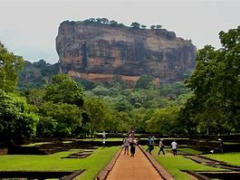
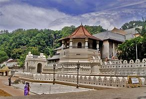
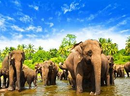
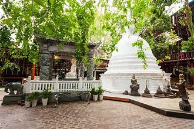
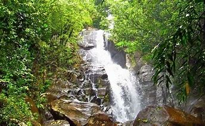

Let's visit Sri Lanka
Sigiriya
Tooth Relic
Pinnewela elephant orphanage
Gangaramaya Temple
Sinharajaya Rain Forest
Above places names here
- Sigiriya
- Tooth Relic
- Pinnawela elephant orphanage
- Gangaramaya Temple
- Sinharaja Rain Forest
| Place | District | Province |
|---|---|---|
| Sigiriya | Matale | Central |
| Tooth Relic | Trincomalee | Central |
| Pinnawela elephant orphanage | Kegalle | Sabaragamuwa |
| Gangaramaya Temple | Colombo | Western |
| Sinharaja Rain Forest | Rathnapura | Sabaragamuwa |
Let's check environment temperature
Enter Celsius value :